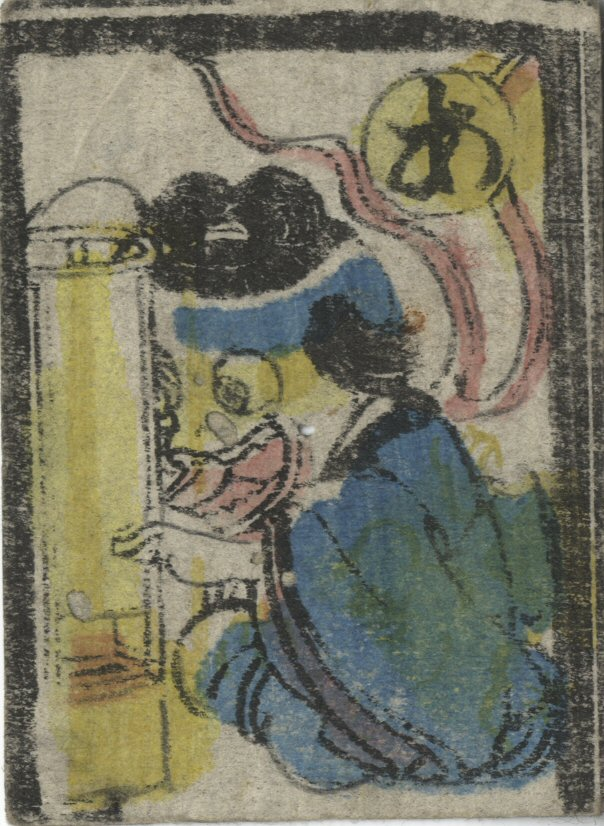

← 图鉴索引

油なめ小僧が行燈の油をなめている。
著作者：一橋齋艶長／出典：親書誌：U426_nichibunken_0397：妖怪かるた；ヨウカイ カルタ／日付：2015／資源識別子：U426_nichibunken_0397_0001_0029
Copyright (c)2010- International Research Center for Japanese Studies, Kyoto, Japan. All rights reserved.